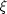
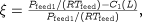
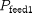
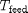
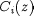

In some cases, simply changing the values of ASSIGNed variables may not be sufficient to guarantee successful initialisation. The Model user may have chosen a particular set of Variables to ASSIGN that could cause difficulty or failure during initialisation. To avoid such possibilities, initialisation procedures can define which degrees of freedom should be specified to guarantee initialisation. The initialisation procedure then also specifies how the choice of degrees of freedom can be reverted to the one specified in the Process by the user.
One possible use of this feature can be seen in the following example. Consider a model of a tubular reactor in which the length of the reaction is a variable, L, to be specified (a degree of freedom) and in which there is an equation that defines the fractional conversion  of one of the reactants. might then be defined as follows.

where the perfect gas law has been used to calculate the inlet concentration of component 1, using the partial pressure of component 1 in the feed and the feed temperature ( and , respectively) and  is the concentration of component i at axial position z in the reactor.
It is usual to specify the value of L and calculate the conversion , but it is also possible to specify as a degree of freedom, which would then determine the value of L. The latter specification may present problems during initialisation, however, so a suitable initialisation procedure for this model would be to replace any choice of degree of freedom with a specification on the length of the reactor, L. This (maybe combined with a suitable value for L) would then result in a more robust model.
This can be achieved in gPROMS using the following.
DISTRIBUTION_DOMAIN
Axial AS [0:1]
# normalised as ReactorLength is a Variable ( PARTIAL(,Axial)
# becomes 1/ReactorLength * PARTIAL(,Axial) etc. )
VARIABLE
...
ReactorLength AS Length
C AS DISTRIBUTION(NoComp,Axial) OF MolarConcentration
Conversion AS NoType
EQUATION
...
Conversion = (Pfeed(1) / (Rg * Tfeed) - C(1,1)) /
(Pfeed(1) / (Rg * Tfeed)) ;
INITIALISATION_PROCEDURE IP_ReplaceConversion
START
REPLACE
Conversion
WITH
ReactorLength := 5 ;
# this value of L guarantees successful initialisation
END
END
NEXT
MOVE_TO
REVERT Conversion ;
END
END
END
In this example, the conversion must be specified in the Process as follows.
ASSIGN R101.Conversion := 0.95 ;